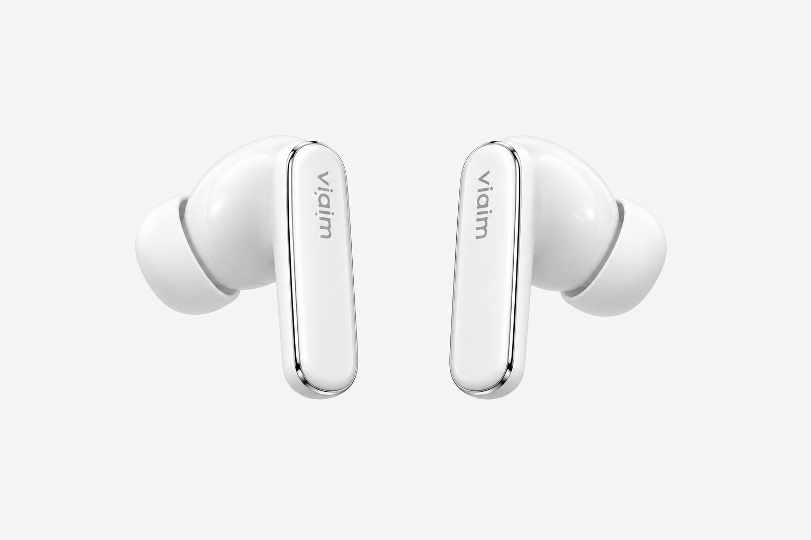
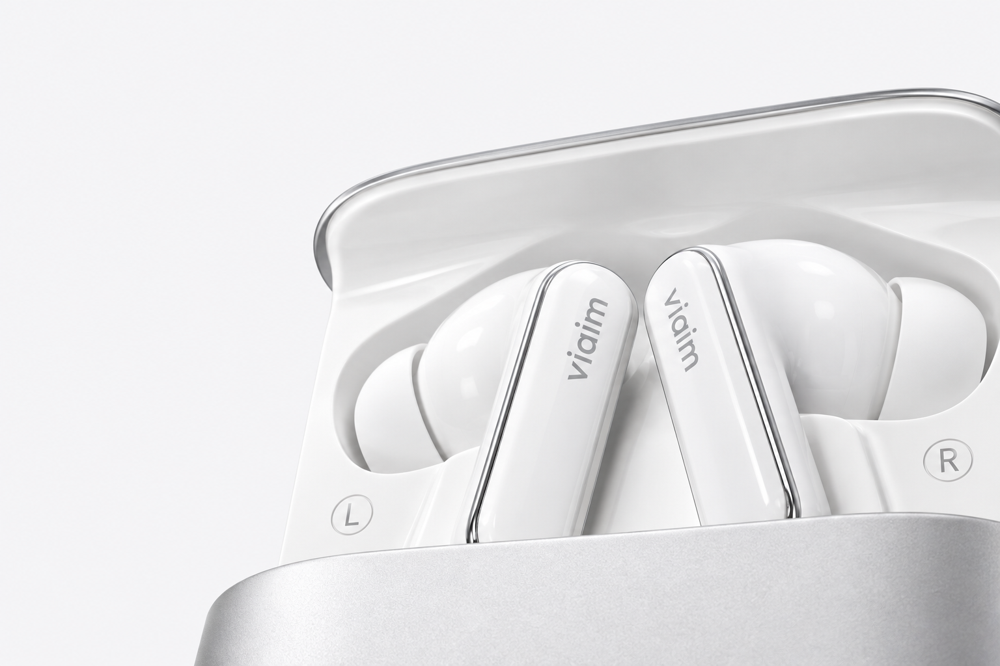
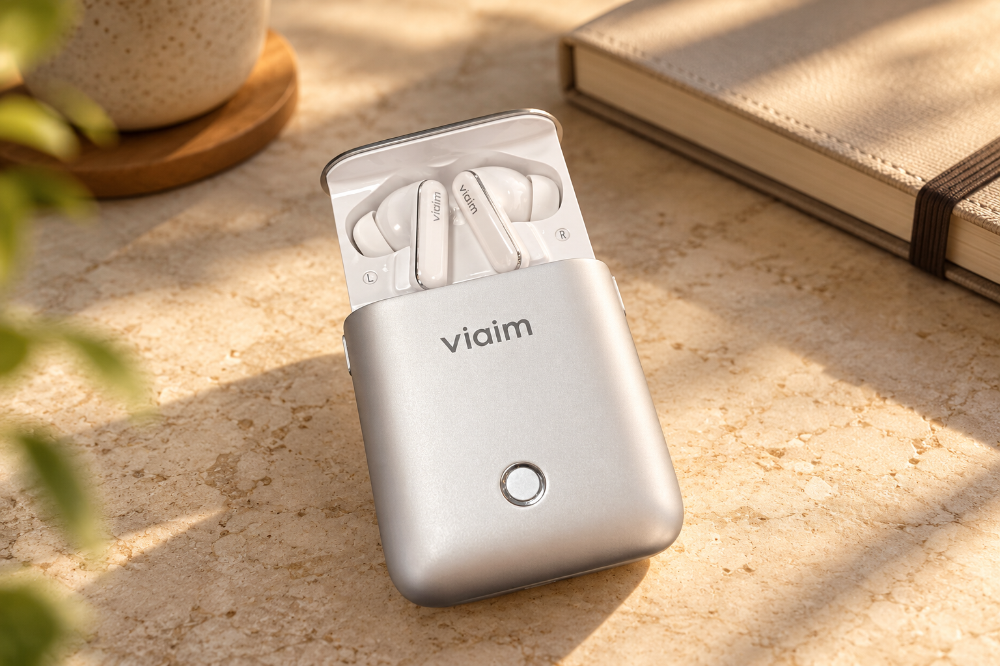

双击，切换你的节奏
生活 → 工作 → 通勤。
双击或双捏，轮换当前模式。
YOUR EVERYDAY AI COMPANION
聆 · Aidol，基于 viaim AI 耳机二次开发。
让对话成为记忆，让陪伴自然发生。

LESS SCREEN. MORE LIFE.
耳机、手机，还有懂你的 AI。
把需要记住的事交给聆，把注意力留给眼前。

我们以 viaim Rise AI 耳机为硬件基础，二次开发 Aidol 应用，将语音陪伴、会议纪要、个人记忆与通勤辅助，融入一个随身 AI 助手。
硬件产品与品牌归属 viaim，Aidol 为独立二次开发应用。购买链接进入京东 viaim Rise 商品页，价格与在售情况以商品页为准。
A TOUCH CLOSER.
viaim Rise × Aidol 触控联动
设备页一键开启 · 状态清晰可见
生活 → 工作 → 通勤。
双击或双捏，轮换当前模式。
单击或单捏，开始录音或结束并发送。
长按或长捏，取消当前操作。
自定义添加、编辑个人记忆。
偏好、约定与重要小事，随时更正。
设备页分别显示监听启用状态与实际收到的触控事件。
双耳明确摘下或断连时停止当前操作；戴回后，等待你手动开始。
前台重连仅尝试原来的 Rise，最多三次，不切换设备、不自动录音。触控联动需使用支持 Rise SDK 的对应应用版本，并以耳机实际上报的事件为准。手势采用预设规则；个人记忆内容支持自定义编辑。
INTELLIGENCE, WITH A PERSONAL TOUCH.
从一句话，到下一步。
让 AI 能力，真正走进你的日常。
记住偏好、约定和重要的小事。
再问起时，从你的记忆里找到有据可循的答案。
你提过更喜欢少冰、无糖的拿铁，下午通常会选择低因咖啡。
示例记忆 · 昨天 09:10「拿铁少冰无糖，下午想喝低因。」把想法说出来，也把回应听进去。
语音或文字，按你舒服的方式交流。
工作时安静记录，按时段整理纪要。
关键结论、原话引用与行动项，一目了然。
工作、通勤、生活。
不同的节奏，同样的默契。
路线、天气与周边地点。
让每一次出发更有准备。
把想说的消息整理好。
由你确认，复制后发送。
ONE COMPANION. EVERY SIDE OF YOU.
忙碌也好，放空也好。都有恰如其分的陪伴。
出发 · 路线规划示意
搜索目的地，查看步行、公交或驾车路线。把出发前的安排，梳理得更清楚。
让聆加入你的一天交互演示 · 地点为公共地标；此页面不会获取位置或查询实时路线。
从这里去深圳湾公园，怎么走？
在地图中选择当前位置与出行方式，即可查询到达深圳湾公园的路线。

A LITTLE CLOSER TO YOU.
记得你喜欢的咖啡，
也装得下下一次出发的期待。
PERSONAL, BY DESIGN.
录音由你开启，重要记忆由你掌握。
独立账号保存对话与记忆，支持自定义添加、编辑、删除与导出。
在安卓手机上下载并打开 APK。
如有提示，允许浏览器安装此应用。
创建专属账号，开启个人空间。
无需准备 API Key 或电脑后端。
在系统中配对蓝牙耳机，
允许应用使用麦克风与蓝牙。
A FEW THINGS TO KNOW.
Aidol 是我们基于 viaim AI 耳机二次开发的 Android 应用，本项目以 viaim Rise 为目标设备。耳机硬件可通过 本页京东购买入口选购，下载按钮提供的是 Aidol 应用。具体型号、在售情况及硬件服务以 viaim 和店铺说明为准；应用功能与兼容性以当前版本和实测为准。
当前提供 Android 8.0 及以上版本的Android 安装包，暂未提供 iOS 版本。安装后注册账号即可使用；AI 语音、记忆整理和地图等能力需要网络连接及相应服务可用。
录音需要你主动开启。当前 Android 采用前台分段录音，每轮最多 60 秒，录音结束后识别与回复；工作模式只记录。它不是后台常驻监听或实时双工通话，离开前台会停止自动采集。
会议纪要按选择的工作记录时段整理，可查看原话引用和行动项。记忆问答依据你的记录提供摘录与引用；AI 整理内容仍需你核对，尤其是姓名、时间和重要决定。官网的互动内容均为示例。
当前生成提醒或消息草稿，由你查看、复制和自行发送。应用不会自动向联系人发送微信或短信，也不提供公交车辆的实时追踪。
当前服务版按账号独立保存数据；语音识别、AI 回答等处理会使用服务器与模型服务。你可以在应用中管理、导出或清空数据，也可以注销账号。请在录音前征得相关参与者同意。